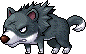

Lv. 42 · #9410002
험악한 들개
감마니아 연예신문의 현 최강견(최강의 파파라치)로, 이미 스타들의 첫째 가는 공공의 적이 되었다. 연예인들이 모두 그의 손바닥 안을 벗어날 수 없는 것은 그의 필살기가 분신술로, 혼자일 때 분신술을 써서 소음을 낼 수 있어, 사람들로 하여금 수많은 파파라치들에게 포위된 듯한 느낌을 주기 때문이다. 들리기로는 주 모 씨가 그 위해를 설명하기 위해서 심지어 '사면초가'라는 곡을 썼다고 한다.
스탯
레벨 42- HP
- 2,300
- MP
- 30
- EXP
- 102
- 넉백 가능 데미지
- 1+
- 물리 데미지
- 140
- 마법 데미지
- 150
- 물리 방어력
- 160
- 마법 방어력
- 110
- 속도
- 15
- 42레벨 에서의 필요 명중
- 73.32
- 메소
- 315.0
- 속성관계
- 미기재
- 체경비
- 22.55
- 형태
- 동물형
출현 지역
출현 맵 4개맵 이름을 누르면 메이플노트의 맵 정보가 열립니다.
드롭 테이블
전체 13개| 아이템 | 아이템 ID | 드롭 확률 |
|---|---|---|
| 들개의 틀니 | 4000200 | 40% |
| 뻣뻣한 깃털 | 4003004 | 4% |
| 하얀 포션 | 2000002 | 1% |
| 파란 포션 | 2000003 | 1% |
| 활전용 화살 | 2060000 | 0.8% |
| 석궁전용 화살 | 2061000 | 0.8% |
| 토파즈의 원석 | 4020006 | 0.3% |
| 가넷의 원석 | 4020000 | 0.3% |
| 레드 길티언 | 1002153 | 0.01% |
| 제코 | 1432005 | 0.008% |
| 레드 루이마리 | 1051039 | 0.007% |
| 황월 장갑 | 1082066 | 0.007% |
| 황 진월장화 | 1072000 | 0.007% |
조건에 맞는 드롭 아이템이 없습니다.
확률은 메이플노트에 게시된 값입니다. 아이템 이름을 누르면 원본 아이템 정보가 열립니다. 과거 버전 데이터이므로 실제 메이플랜드와 다를 수 있습니다.